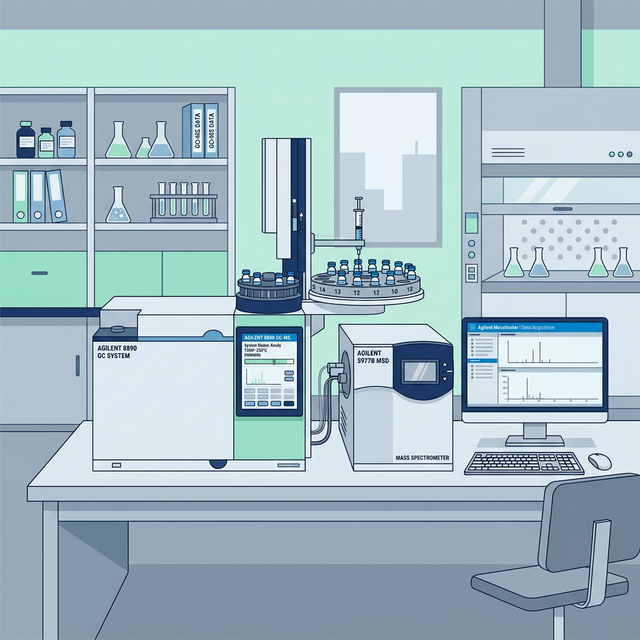

🧬 GCMS Operation
Agilent 8890 Gas Chromatography-Mass Spectrometry
Standard operating procedure and quick reference for operating the Agilent GCMS 8890 in the Screening Unit. Covers solvent preparation, sequence setup, and tuning parameters.

◈ 1. Preparation & Solvents
Pre-Run Checklist
- Sonicate all sample vials thoroughly before injection to remove trapped gases and ensure sample homogeneity.
- Prepare Ethanol Solvent in exactly 2 designated bottles (A and B).
- Manage waste lines: Ensure WA and WB (Waste Bottles) are emptied up to 5 bottles.
◈ 2. GCMS Tuning Workflow
Autotune & Evaluation
- Open the GCMS Software Application.
- To initiate tuning, navigate to VIEW → TUNE & VACUUM CONTROL.
- Select TUNE → STD SPECTRA TUNE (STUNE.U).
- Evaluate the tune profile: Go to TUNE → TUNE EVALUATION.
- If acceptable, save the parameters: Navigate to FILE → SAVE TUNE PARAMETER. Select STUNE.U and click SAVE.
⚠️ Important: Printer Check
Before initiating the tune, verify that the connected printer has paper. The system is configured to print the tuning report automatically upon completion.
◈ 3. Sequence & Method Setup
Sequence Configuration
- Return to the main dashboard: Click VIEW → INSTRUMENT CTRL → OK.
- Load the sequence: Go to SEQUENCE → LOAD SEQUENCE and select the desired base sequence name.
- Modify the sequence: Click SEQUENCE → EDIT SEQUENCE.
- Verify that the Method File is strictly set to standard operating method: TESTINGMETHOD_LATEST.M.
◈ 4. Data Naming & Injection Rules
Autosampler Parameters
| Parameter | Instruction Format | Example |
|---|---|---|
| Data Path | Group by current month | ...\JULY\ |
| Data File | Initial_Date_SampleNo[W] |
SYED_20240722_2024010064W |
| Sample Name | Input the registered product name (isi nama keluaran) | PROD_X_EXTRACT |
- Wash Protocol: Every sample must have an extra wash injection before and after the actual sample analysis (e.g., wash blank, sample, wash blank).
- Injection Count: Each sample bottle strictly requires 2 injections. For example:
PH3 (1st INJ)followed byPH3 (2nd INJ). - Vial Positioning: Ensure the sample vial positions accurately reflect the start and end positions loaded in the autosampler tray to prevent mis-injections.
◈ 5. Execution
Running the Sequence
- Save the modified sequence: Select Save Sequence AS..., name it appropriately, and click OK.
- Initiate execution: Go to SEQUENCE → Run Sequence.
- Ensure the Operator Name is updated to your identifier.
- Click Run Sequence to begin the analysis queue.